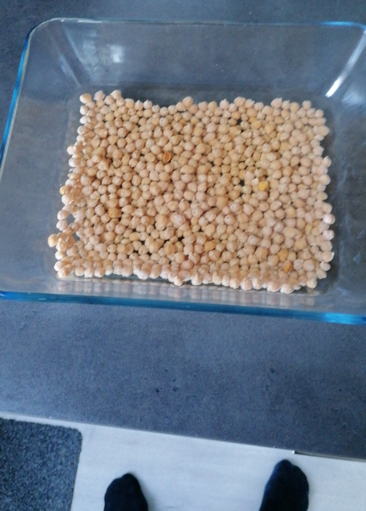
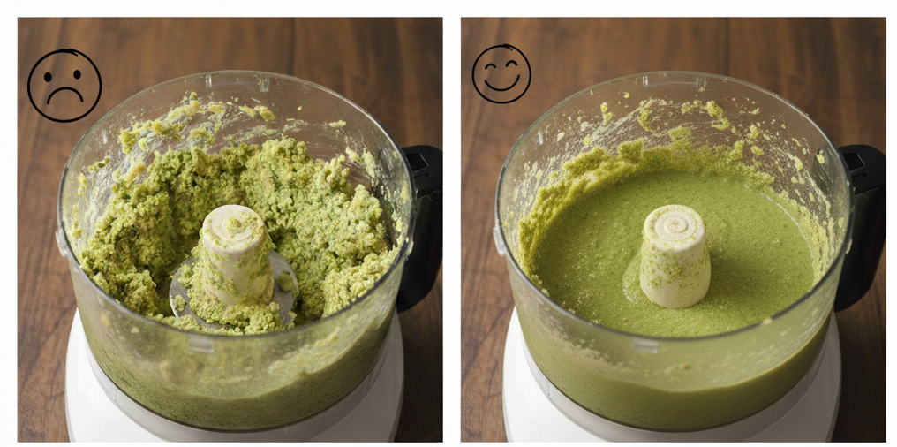
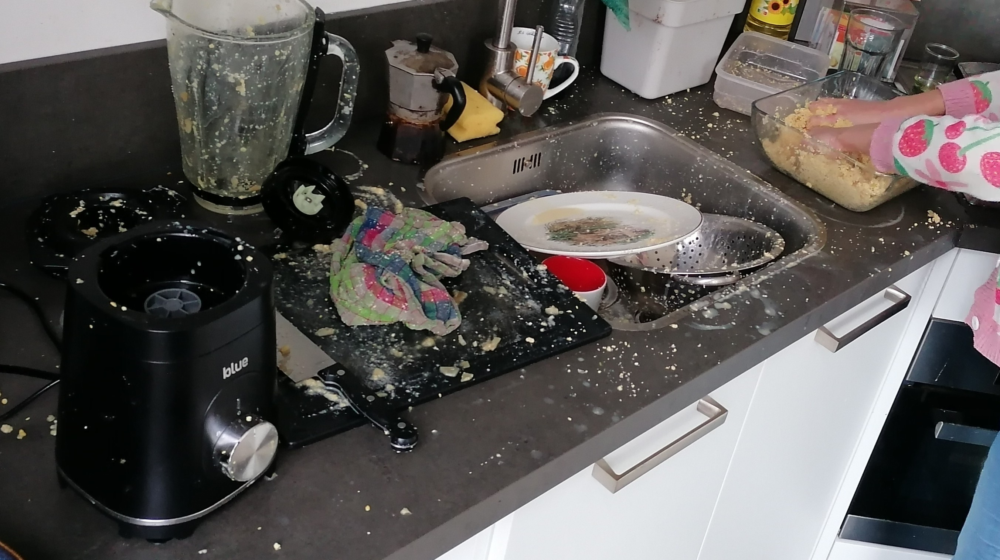
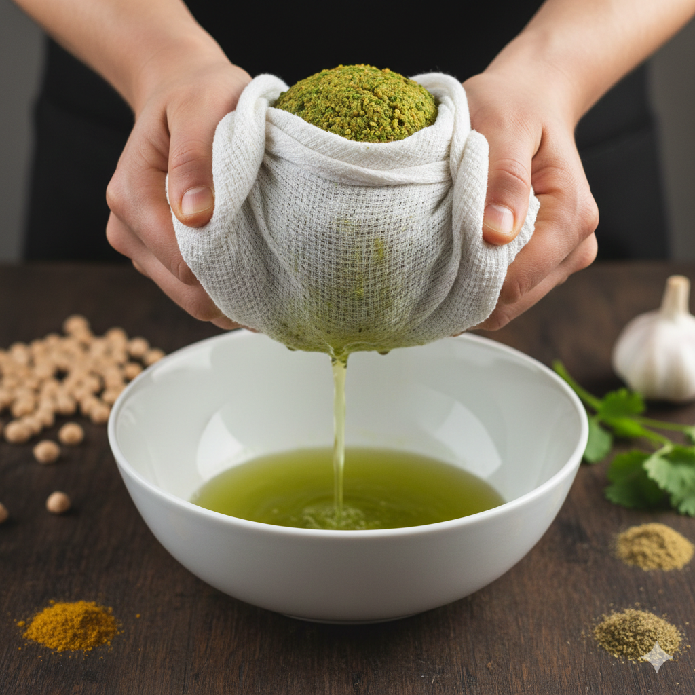
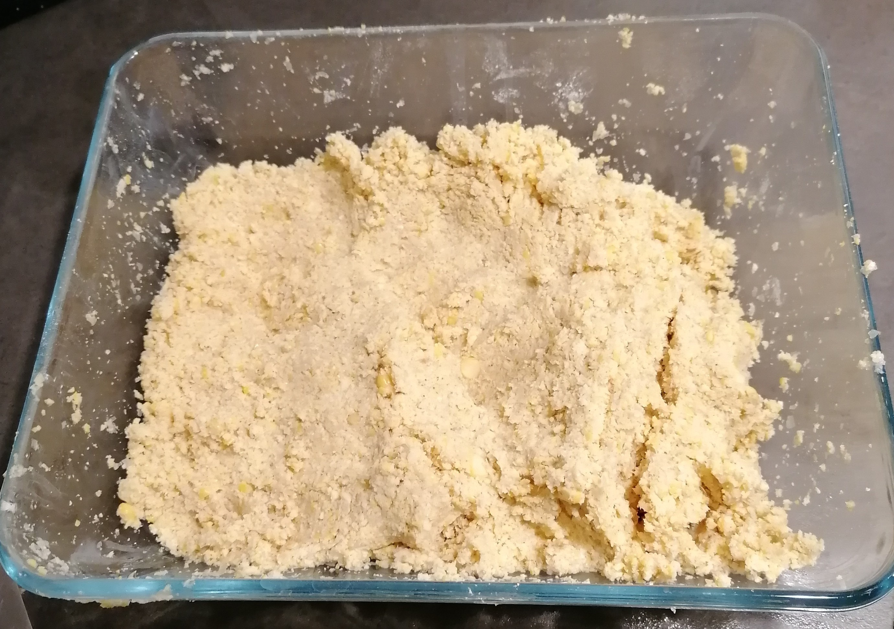
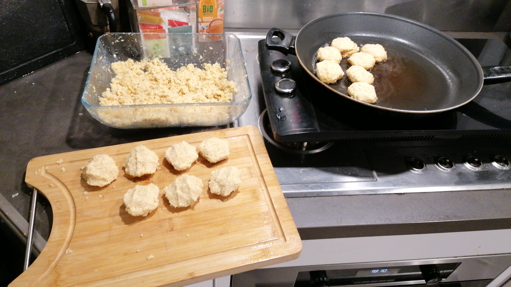
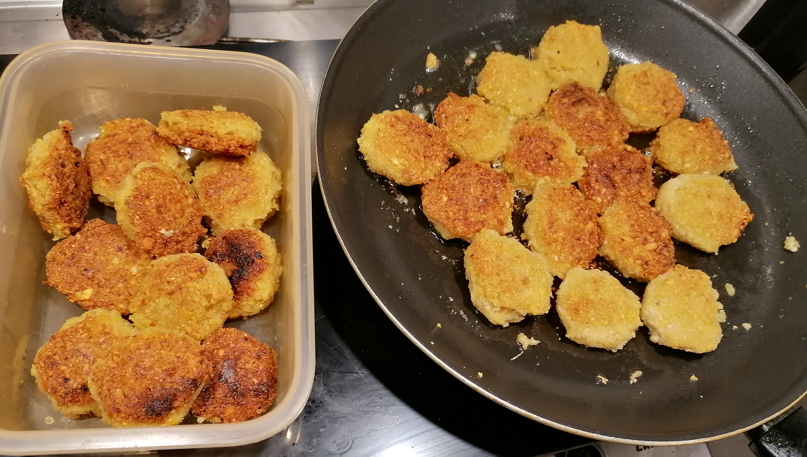

Fir mei Kimle, ein schwäbischer Gruß
Wie du dir des gewünscht hasch, hab i dir des Falafelrezept aufgschrieba. I han mir denkt, es isch ganz guat, wenn du a bissle Schwäbisch lesa übsch ond dabei direkt was Räachts zom Essa kochscht! Da lecksch mi am Aaasch!!!
Was de brauchsch
- 500g droggene Kichererbsen (bloß koi Dose!)
- Zwiebel ond an Haufa Knoblauch
- Salzwasser zom Eilega
- 100g Mehl (weiß) & a Prise Natron
- Frischs Grünzeig aus dei'm Gärtle in Anholt
1. Des Bad
De droggene Kichererbsen müsset woich sei ond dann für zwölf bis vierazwanzig Stond eilega.
2. Des G'schäft
Ab in de Mixer mit viel Wasser! Lass es ruhig in zwoi oder drei Portionen durchlaufe, damits no Breggel hat, aber au geschmeidig isch. Es muss richtig flutschen!
 3. Trockalega
Jetzt kommt des Wasser wieder raus! Pack d'Masse in a Tuch ond dann: drucke, drucke, drucke! Des Wasser muss ganz raus, damit d'Masse schee trocke wird.
4. Würza & Forma
Mehl und Natron oder Backpulver dazu, und deine Lieblingsgewürze, Pfeffer, Muskat, wa de wid. Ond dann: Lass es steha! Wenn d'Masse ruht, wird se schee fescht.
 5. Ab in d'Pfann
Holsch aus dei'm Gärtle noch was schönes Grünzeig dazu! Form dei Bällle ond bretsch se goldgelb an von beida Seita. Die kannsch direkt essa oder später nochmal aufbacka – schmecket emmer guat!
Am beschte schmecket d'Falafel gemeinsam auf'm Sofa so wie bei ons boide. Wenn i des aufschreib, denk i dra, wie mir beide dahoim aufm Sofa gegesse hend. Des war so schee!